Although it is a while before this route gets you out of the city, it does not matter because cycling along the river on Maasboulevard shows off the best of Rotterdam. Once you reach the Brienenoord bridge, this becomes a pleasant route - first on a cycle path below the dyke, and later following a minor road along the dijk to Lekkerkerk, where you take the ferry across the river Lek to Kinderdijk and all its windmills.
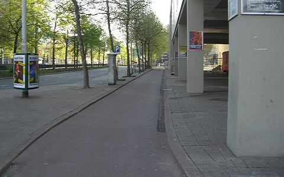
01 East on Blaak
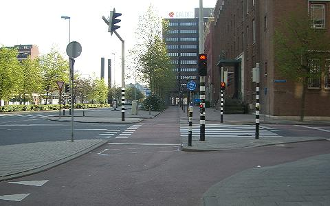
02 Continue accross Posthoornstraat
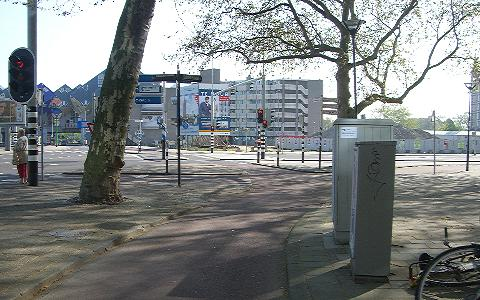
03 Right up slope on
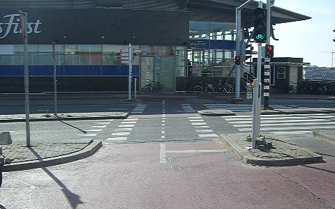
04 Cross left over Verlengde Willemsbrug
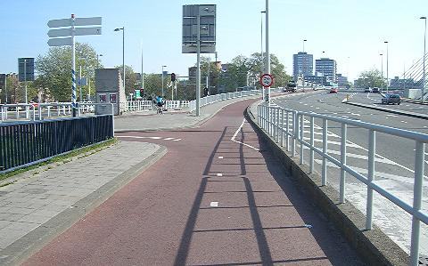
05 Left down slope in cycle path
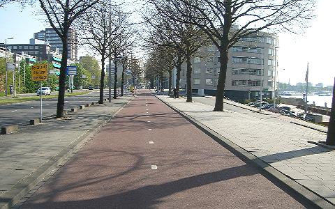
06 Continue North-East on Maasboulevard
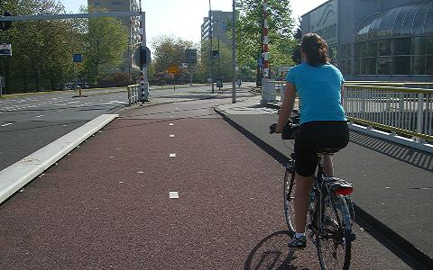
07 Continue over bridge
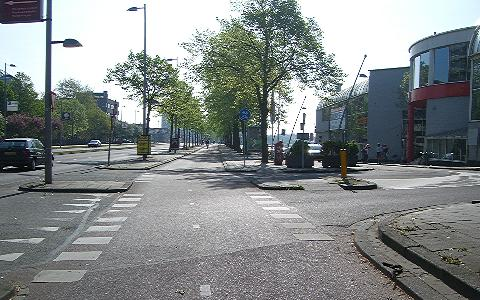
08 Continue past Tropicana
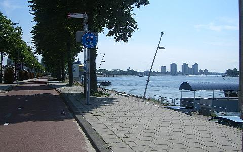
09 Continue South-East on Maasboulevard
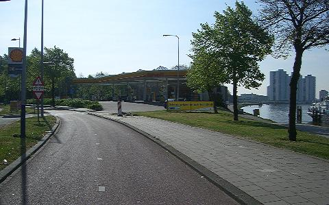
10 Continue past Shell garage
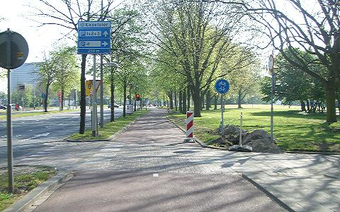
11 Continue East on Abraham van Rijckevorselweg
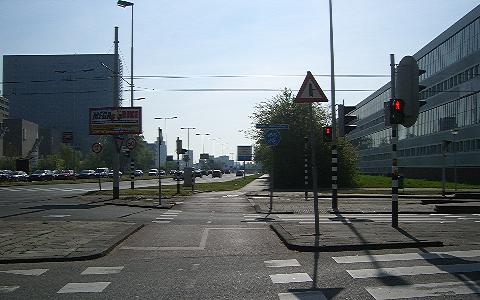
12 Continue across tram tracks and up slope
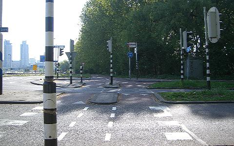
13 Continue across Kralingse Zoom and down slope
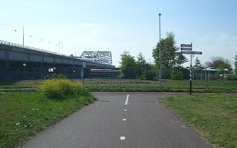
14 Left under motorway Van Brienenoordbrug bridge
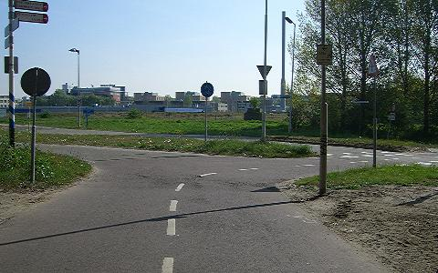
15 Right across road towards river
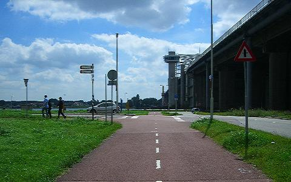
16 Left on Rivium promenade
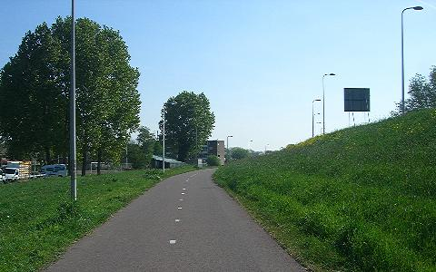
17 Continue on cycle path
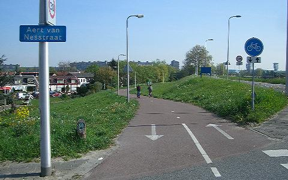
18 Continue on cycle path down slope
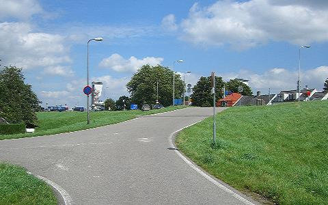
19 Bear right up slope
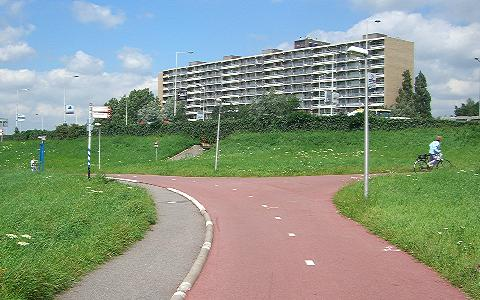
20 Right up slope towards bridge
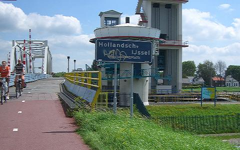
21 Continue across the river Ijssel
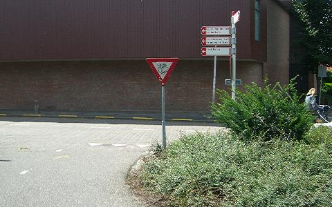
22 Right at bottom of cycle path slope
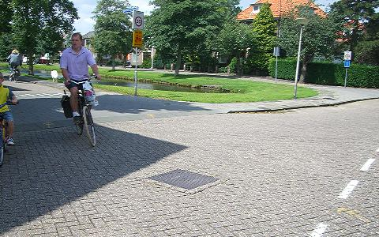
23 Left along Weteringsingel
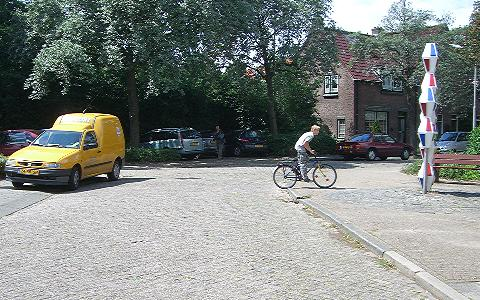
24 Bear right
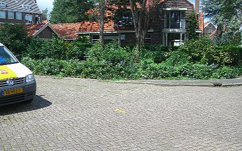
25 Continue on Tuinstraat
Pass a school on your right
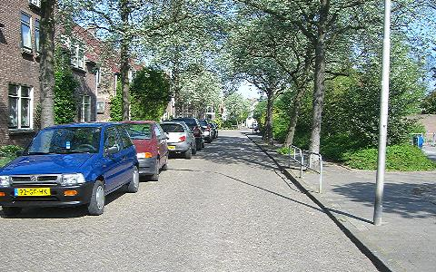
26 Continue on Tuinstraat
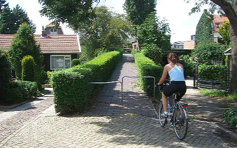
27 Left on footpath up slope
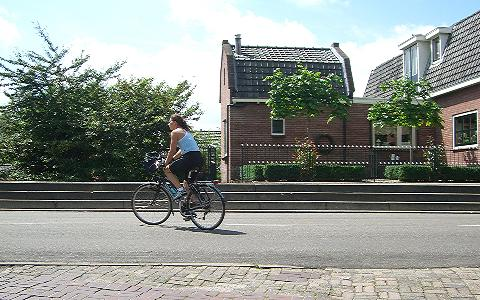
28 Left on Lekdijk
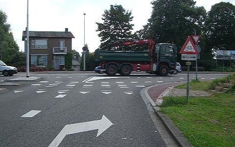
29 Right on Industrieweg
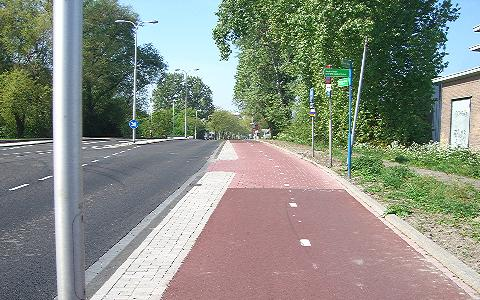
30 First left across road on Lekdijk
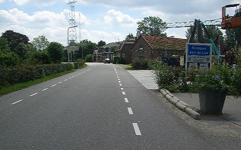
31 Continue several kilometers along dijk to Krimpen aan de Lek
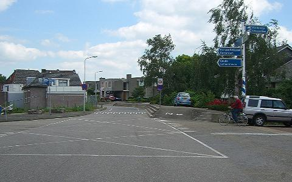
32 Right down slope to Kinderdijk car ferry
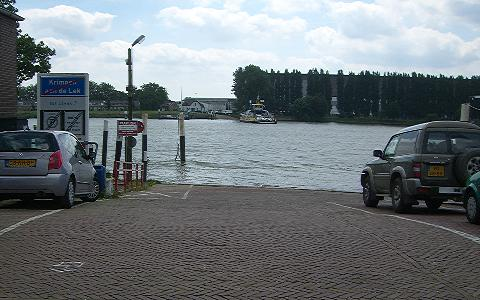
33 Take the ferry across the river Lek
As of 2008, the ferry runs 06:00-24:00 year-round and costs €0.65 for one person with bicycle, according to the ferry operator's web site (in Dutch).
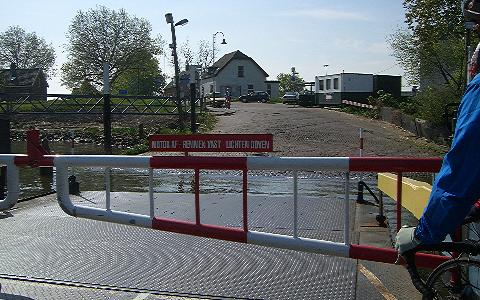
34 Continue South up slope
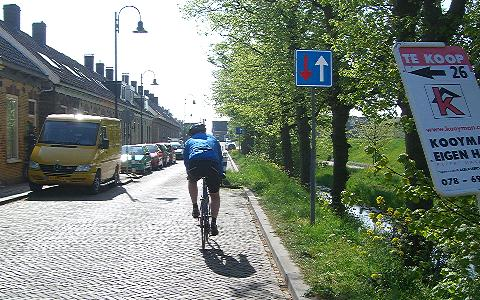
35 Continue on Veerdam
At the end of the street, turn left along Molenstraat using the cycle path on the road.
After 400m turn right towards the pumping station and windmills at Kinderdijk.